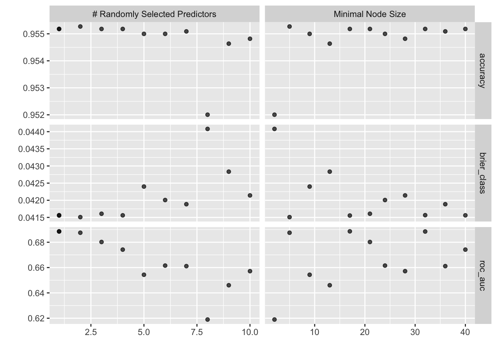

analysis_train <- readRDS(here("models","data", "analysis_train.rds"))
analysis_folds <- readRDS(here("models","data", "analysis_folds.rds"))Random Forest
Random Forest Machine Learning Model for Weapon Carrying School
Setting Up the Environment
Loading the Data
Splitting the Data
set.seed(2023)
WeaponCarry_split <- initial_split(analysis_train,
strata = WeaponCarryingSchool)
weapon_train <- training(WeaponCarry_split)
weapon_test <- testing(WeaponCarry_split)
WeaponCarry_split<Training/Testing/Total>
<11022/3674/14696>Check our work
weapon_train |>
tabyl(WeaponCarryingSchool) |>
adorn_pct_formatting(0) |>
adorn_totals() WeaponCarryingSchool n percent
0 10528 96%
1 494 4%
Total 11022 -weapon_test |>
tabyl(WeaponCarryingSchool) |>
adorn_pct_formatting(0) |>
adorn_totals() WeaponCarryingSchool n percent
0 3532 96%
1 142 4%
Total 3674 -Creating the Resampling Object
set.seed(2023)
cv_weapon <- rsample::vfold_cv(weapon_train,
v= 5,
strata = WeaponCarryingSchool)
cv_weapon# 5-fold cross-validation using stratification
# A tibble: 5 × 2
splits id
<list> <chr>
1 <split [8817/2205]> Fold1
2 <split [8817/2205]> Fold2
3 <split [8818/2204]> Fold3
4 <split [8818/2204]> Fold4
5 <split [8818/2204]> Fold5reciepe
carry_weapon_recipe_forest <-
recipe(formula = WeaponCarryingSchool ~ ., data = weapon_train) |>
step_impute_mode(all_nominal_predictors()) |>
step_impute_mean(all_numeric_predictors()) |>
step_dummy(all_nominal_predictors())Model Specification
ranger_spec <-
rand_forest(
# the number of predictors to sample at each split
mtry = tune(),
# the number of observations needed to keep splitting nodes
min_n = tune(),
trees = 100) |>
set_mode("classification") |>
set_engine("ranger",
# This is essential for vip()
importance = "permutation")
ranger_specRandom Forest Model Specification (classification)
Main Arguments:
mtry = tune()
trees = 100
min_n = tune()
Engine-Specific Arguments:
importance = permutation
Computational engine: ranger Creating the Workflow
ranger_workflow <-
workflow() |>
add_recipe(carry_weapon_recipe_forest) |>
add_model(ranger_spec)
ranger_workflow══ Workflow ════════════════════════════════════════════════════════════════════
Preprocessor: Recipe
Model: rand_forest()
── Preprocessor ────────────────────────────────────────────────────────────────
3 Recipe Steps
• step_impute_mode()
• step_impute_mean()
• step_dummy()
── Model ───────────────────────────────────────────────────────────────────────
Random Forest Model Specification (classification)
Main Arguments:
mtry = tune()
trees = 100
min_n = tune()
Engine-Specific Arguments:
importance = permutation
Computational engine: ranger Model Tuning
#doParallel::registerDoParallel()
set.seed(46257)
ranger_tune <-
tune_grid(
ranger_workflow,
resamples = cv_weapon,
# grid = 11 says to choose 11 parameter sets automatically
grid = 11)i Creating pre-processing data to finalize unknown parameter: mtry#doParallel::stopImplicitCluster()
saveRDS(ranger_tune, here("models", "model_outputs", "forest_tune.rds"))Collect the tunning Metrics
collect_metrics(ranger_tune)# A tibble: 33 × 8
mtry min_n .metric .estimator mean n std_err .config
<int> <int> <chr> <chr> <dbl> <int> <dbl> <chr>
1 1 17 accuracy binary 0.955 5 0.00162 Preprocessor1_Model01
2 1 17 brier_class binary 0.0416 5 0.00140 Preprocessor1_Model01
3 1 17 roc_auc binary 0.689 5 0.00889 Preprocessor1_Model01
4 1 32 accuracy binary 0.955 5 0.00162 Preprocessor1_Model02
5 1 32 brier_class binary 0.0416 5 0.00139 Preprocessor1_Model02
6 1 32 roc_auc binary 0.688 5 0.00810 Preprocessor1_Model02
7 2 5 accuracy binary 0.955 5 0.00157 Preprocessor1_Model03
8 2 5 brier_class binary 0.0415 5 0.00132 Preprocessor1_Model03
9 2 5 roc_auc binary 0.688 5 0.0113 Preprocessor1_Model03
10 3 21 accuracy binary 0.955 5 0.00162 Preprocessor1_Model04
# ℹ 23 more rowsVisualize the Metrics
autoplot(ranger_tune)
Choosing the best hyperparameters
best_weapon_carrying_forest <- select_best(ranger_tune, metric = "roc_auc")
best_weapon_carrying_forest# A tibble: 1 × 3
mtry min_n .config
<int> <int> <chr>
1 1 17 Preprocessor1_Model01# cost_complexity = 1e-10; This is extremely small, meaning almost no penalty is applied for having a more complex tree. OVERFITTINGFinalize the Workflow
carry_weapon_final_workflow_forest <-
finalize_workflow(ranger_workflow, best_weapon_carrying_forest)
carry_weapon_final_workflow_forest══ Workflow ════════════════════════════════════════════════════════════════════
Preprocessor: Recipe
Model: rand_forest()
── Preprocessor ────────────────────────────────────────────────────────────────
3 Recipe Steps
• step_impute_mode()
• step_impute_mean()
• step_dummy()
── Model ───────────────────────────────────────────────────────────────────────
Random Forest Model Specification (classification)
Main Arguments:
mtry = 1
trees = 100
min_n = 17
Engine-Specific Arguments:
importance = permutation
Computational engine: ranger Fit the forest
carry_weapon_fit_forest <- fit(carry_weapon_final_workflow_forest,
weapon_train)
carry_weapon_fit_forest
saveRDS(carry_weapon_fit_forest, here("models","model_outputs", "forest_fit.rds"))Predictions: Review fit on the training data
weapon_pred_forest <-
augment(carry_weapon_fit_forest, weapon_train) |>
select(WeaponCarryingSchool, .pred_class, .pred_1, .pred_0)
weapon_pred_forest# A tibble: 11,022 × 4
WeaponCarryingSchool .pred_class .pred_1 .pred_0
<fct> <fct> <dbl> <dbl>
1 0 0 0.0470 0.953
2 0 0 0.0328 0.967
3 0 0 0.105 0.895
4 0 0 0.0470 0.953
5 0 0 0.0321 0.968
6 0 0 0.0321 0.968
7 0 0 0.0466 0.953
8 0 0 0.0470 0.953
9 0 0 0.0321 0.968
10 0 0 0.0669 0.933
# ℹ 11,012 more rowsROC graph
roc_plot_training_forest <-
weapon_pred_forest |>
roc_curve(truth = WeaponCarryingSchool,
.pred_0) |>
autoplot()
roc_plot_training_forest
saveRDS(roc_plot_training_forest, here("models","roc_graphs", "forest.rds"))